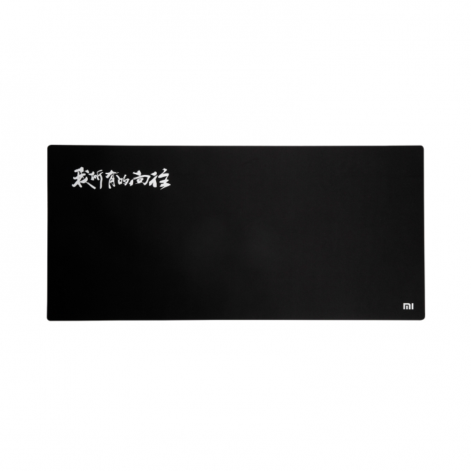

<!DOCTYPE HTML>
<html>
<head><meta name="generator" content="Hexo 3.9.0">
  <meta charset="utf-8">
  <meta http-equiv="X-UA-Compatible" content="IE=edge">
  <meta name="apple-mobile-web-app-capable" content="yes">
  <meta name="apple-mobile-web-app-status-bar-style" content="black">
  <meta name="google-site-verification" content>
  
  <title>我的写作工具箱</title>
  <meta name="author" content="Emac">
   <meta name="description" content="出门左拐：

我们为什么要写作？
我是如何写作的？


作为写作三部曲的最后一篇，展示一下我的日常写作工具箱。
Markdown不夸张的说，没有Markdown，就没有现在这一波以掘金，简书，SegmentFault为代表的写作热。在Markdown之前，摆在程序员面前的写作格式主要有Word和Wi">
  

  <meta property="og:title" content="我的写作工具箱">
  <meta name="viewport" content="width=device-width, initial-scale=1, maximum-scale=1">
  <meta property="og:site_name" content="Emac">
 <meta property="og:image" content="undefined">
  
  <link href="/apple-touch-icon-precomposed.png" sizes="180x180" rel="apple-touch-icon-precomposed">
  <link rel="alternate" href="/atom.xml" title="Emac" type="application/atom+xml">
  <link rel="stylesheet" href="//cdn.bootcss.com/bootstrap/3.3.6/css/bootstrap.min.css">
  <link rel="stylesheet" href="//cdn.bootcss.com/font-awesome/4.5.0/css/font-awesome.min.css">
  <link rel="stylesheet" href="/css/m.min.css">
  <link rel="icon" type="image/x-icon" href="/favicon.ico">
</head>
</html>
<body>
  <div id='wx_pic' style='display:none;'></div>
  <div id="main">
    <div class="behind">
      <div class="back">
        <a href="/" class="black-color"><i class="fa fa-times" aria-hidden="true"></i></a>
      </div>
      <div class="description">
        &nbsp;拾贝
      </div>
    </div>
    <div class="container">
      

  <article class="standard post">
    <div class="title">
      
  
    <h1 class="page-title center">
        我的写作工具箱
    </h1>
  


    </div>
    <div class="meta center">
      
<time datetime="2017-01-07T16:00:00.000Z">
  <i class="fa fa-calendar"></i>&nbsp;
  2017-01-08
</time>


    
    &nbsp;
    <i class="fa fa-tag"></i>&nbsp;
    <a href="/categories/notes/">notes</a>


    
    &nbsp;
    <i class="fa fa-tag"></i>&nbsp;
    <a href="/tags/原创/">原创</a>·<a href="/tags/写作/">写作</a>


    </div>
    <hr>
    <div class="picture-container">
      
    </div>
    <p></p>
<blockquote>
<p>出门左拐：</p>
<ul>
<li><a href="http://emacoo.cn/notes/why-i-write/">我们为什么要写作？</a></li>
<li><a href="http://emacoo.cn/notes/how-i-write/">我是如何写作的？</a></li>
</ul>
</blockquote>
<p>作为写作三部曲的最后一篇，展示一下我的日常写作工具箱。</p>
<h2 id="Markdown"><a href="#Markdown" class="headerlink" title="Markdown"></a>Markdown</h2><p>不夸张的说，没有Markdown，就没有现在这一波以掘金，简书，SegmentFault为代表的写作热。在Markdown之前，摆在程序员面前的写作格式主要有Word和Wiki。先说Word。对于文科生思维的办公人群，Word是不二之选，但对于理科生思维的程序员而言，Word里面的各种模板、段落格式、页眉页脚，就像孙悟空头上的紧箍咒，一想就头疼，尤其是像我这样有代码洁癖的程序员，字没码几个，排版排了一遍又一遍。Word的第二个问题在于可传播性，由于Word是一种二进制格式，需要用特定的软件才能打开，而在移动互联网时代，很少有人有耐心在阅读之前先下载一个文档，更别说很多人手机上可能都没有能够打开Word的App。</p>
<p>再看Wiki。Wiki虽然没有可传播性的问题，但极度依赖于网络，在离线环境下，你是没法编辑一个Wiki的。Wiki的另一个问题在于缺少统一的规范，我用过很多Wiki网站，虽然大体上支持的格式相同，但在纯文本编辑模式下，很多格式（比如加粗，链接）的表示方式不尽相同，这就让文章的可迁移性大打折扣。</p>
<p>Markdown可以说解决了上述所有的问题，通过统一的规范，纯文本排版，让写作的人能够专注于内容本身，而不用操心格式，最大化写作效率。Markdown另一个对程序员友好的特性是纯文本格式，既方便离线编辑，也容易对文章进行版本化管理。</p>
<p>我本地用的Markdown编辑软件是<a href="http://www.sublimetext.com/" target="_blank" rel="noopener">Sublime</a>, 配合<a href="https://github.com/jonschlinkert/sublime-markdown-extended" target="_blank" rel="noopener">Markdown Extended</a>和<a href="https://github.com/adampresley/sublime-view-in-browser" target="_blank" rel="noopener">View In Browser</a>插件。</p>
<h2 id="画图工具"><a href="#画图工具" class="headerlink" title="画图工具"></a>画图工具</h2><p>为了帮助读者更好的理解文章内容，一般每篇文章我都会配一些图片。配图目的不同，来源也会不同。对于技术类文章，如果是介绍第三方框架，我会优先引用官方网站的图片，然后是一些我读到的比较好的文章。如果是介绍自己开发的系统或者方案，我会自己画图，之前用<a href="https://www.yworks.com/products/yed" target="_blank" rel="noopener">yEd</a>或者<a href="https://www.processon.com/" target="_blank" rel="noopener">processon</a>比较多，最近发现<a href="https://chrome.google.com/webstore/detail/gliffy-diagrams/bhmicilclplefnflapjmnngmkkkkpfad?hl=zh-CN" target="_blank" rel="noopener">Gliffy Diagrams For Chrome</a>这个神器后基本上就用这个了，有时也会用一下Keynote或者Powerpoint。对于非技术类文章，Google是最好的搜图利器。</p>
<h2 id="建站工具"><a href="#建站工具" class="headerlink" title="建站工具"></a>建站工具</h2><p>有了文章和配图，接下来就要为它们找一个容身之处。我的这个个人站点最早是搭建在Amazon的AWS上面，用的CMS系统是<a href="https://getgrav.org/" target="_blank" rel="noopener">Grav</a>，后来服务器到期，就切换到GitHub上面了，用的是目前最流行的<a href="https://hexo.io/" target="_blank" rel="noopener">Hexo</a>，具体搭建步骤可以参考<a href="http://jiji262.github.io/2016/04/15/2016-04-15-hexo-github-pages-blog/" target="_blank" rel="noopener">这篇文章</a>。相对于Grav，Hexo更轻量，所有操作都可以在命令行下完成，支持一键发布到GitHub，非常方便。另一个我比较喜欢的Hexo的特性是草稿功能，对于一些你感兴趣但准备的还不够的主题，可以边做准备边写草稿，全部写完了再发布。</p>
<h2 id="写作环境"><a href="#写作环境" class="headerlink" title="写作环境"></a>写作环境</h2><p>对于程序员而言，写作是一种抽象程度更高的编程，需要放松的环境和专注的思考。对我而言，Mac，豆瓣FM，降噪耳机是不可或缺的陪伴。刻意的营造一些仪式感，可以帮助你更快的进入状态，比如一盏灯，一杯咖啡，一块超大鼠标垫。</p>
<p></p>


  </article>
  </script>
  <script async src="//busuanzi.ibruce.info/busuanzi/2.3/busuanzi.pure.mini.js"></script>
  <span id="busuanzi_container_site_pv">本站总访问量<span id="busuanzi_value_site_pv"></span>次</span>


    </div>
  </div>
  <footer class="page-footer"><div class="clearfix">
</div>
<div class="right-foot container">
    <div class="firstrow">
        <a href="#top" >
        <i class="fa fa-arrow-right"></i>
        </a>
        © emacoo.cn 2015-2020
    </div>
    <div class="secondrow">
        <a href="https://github.com/gaoryrt/hexo-theme-pln">
        
        </a>
    </div>
</div>
<div class="clearfix">
</div>
</footer>
  <script src="//cdn.bootcss.com/jquery/2.2.1/jquery.min.js"></script>
<script src="/js/search.js"></script>
<script type="text/javascript">

// comments below to disable loading animation
function revealOnScroll() {
  var scrolled = $(window).scrollTop();
  $(".excerpt, .index-title, .index-meta, p").each(function() {
    var current = $(this),
      height = $(window).outerHeight(),
      offsetTop = current.offset().top;
    (scrolled + height + 50 > offsetTop) ? current.addClass("animation"):'';
  });
}
$(window).on("scroll", revealOnScroll);
$(document).ready(revealOnScroll)

// disqus scripts


// dropdown scripts
$(".dropdown").click(function(event) {
  var current = $(this);
  event.stopPropagation();
  $(current).children(".dropdown-content")[($(current).children(".dropdown-content").hasClass("open"))?'removeClass':'addClass']("open")
});
$(document).click(function(){
    $(".dropdown-content").removeClass("open");
})

// back to top scripts
$("a[href='#top']").click(function() {
  $("html, body").animate({ scrollTop: 0 }, 500);
  return false;
});


var path = "/search.xml";
searchFunc(path, 'local-search-input', 'local-search-result');

</script>

</body>
</html>
